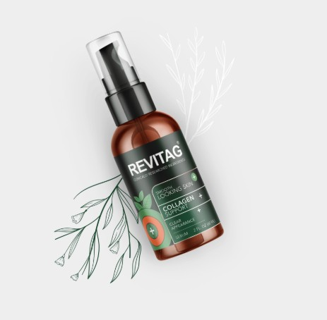

ReviTag™ Testbericht: Kann ein botanisches Serum Hautanhängsel wirklich schmerzfrei entfernen?
Von der Derm Audit Redaktion • Aktualisiert im August 2026 • 6 Min. Lesezeit

Was sind Hautanhängsel und warum entstehen sie?
Stellen Sie sich einen Schneider vor, der einen Wollpullover strickt und am Kragenende vergisst, den Faden abzuschneiden – sondern einfach noch ein paar Millimeter weiterhäkelt.
Dieser Faden tut nicht weh, aber er verfängt sich ständig in Halsketten, scheuert an Hemdkragen oder stört optisch an Hals, Achseln und Augenlidern.
Genau das ist ein Hautanhängsel (Fibrom). Eine gutartige kleine Wucherung aus Kollagenfasern und Blutgefäßen, die durch ständige Reibung von Haut an Kleidung oder Hautfalten entsteht. Völlig harmlos, aber lästig, störend und oft schmerzhaft, wenn man daran hängen bleibt.
⚠️ Der Albtraum gefährlicher Do-It-Yourself-Methoden:
Versuchen Sie niemals, Hautanhängsel mit Scheren abzuschneiden, mit Zahnseide abzuschnüren oder mit Haushaltsessig zu verätzen! Diese Methoden führen zu starken Blutungen, schweren bakteriellen Infektionen und bleibenden dunklen Narben. Die Entfernung muss durch kontrollierte botanische Austrocknung erfolgen.
Der 3-Stufen-Prozess: Austrocknen, Schrumpfen und Sanftes Abfallen
ReviTag™ schneidet oder ätzt nicht an der umliegenden gesunden Haut. Seine flüssige botanische Formel dringt selektiv in den Stiel des Hautanhängsels ein:
- Stufe 1: Gezielte Dehydrierung — Die Pflanzenwirkstoffe unterbrechen die Nährstoffversorgung des Stielgewebes, ohne die gesunde Nachbarhaut zu reizen.
- Stufe 2: Schrumpfung & Verhärtung — Das Gewebe verfärbt sich, zieht sich schmerzlos zusammen und trocknet aus.
- Stufe 3: Spontanes Abfallen — Das trockene Anhängsel fällt beim Duschen oder Anziehen von selbst ab und hinterlässt eine glatte, makellose Hautoberfläche.
Die 4 hochwirksamen Pflanzenstoffe in ReviTag
1. Thuja Occidentalis
Der botanische Auflöser: Lebensbaum-Extrakt, der in der Naturheilkunde für seine Fähigkeit geschätzt wird, gutartige Hautwucherungen aufzulösen.
2. Melaleuca Alternifolia (Teebaumöl)
Der Austrockner & Antiseptiker: Reines ätherisches Öl, das den Gefäßstiel austrocknet und das Areal antibakteriell schützt.
3. Ricinus Communis Samenöl
Der Tiefen-Transporter: Rizinolsäure, die Wirkstoffe tief bis an die Wurzelbasis des Hautanhängsels transportiert.
4. Kolloidales Hafermehl & Sanddorn
Das Beruhigungs-Schild: Pflegt die umliegende Haut, verhindert Rötungen und sorgt für eine narbenfreie Abheilung der Hautbasis.
Methoden-Vergleich: ReviTag™ vs. Ärztliche Vereisung (Kryotherapie)
| Kriterium / Methode |
ReviTag™
Sieger: Schmerzfreie Heimlösung
|
Kryotherapie / Flüssigstickstoff
Hautarzt-Praxiseingriff
|
|---|---|---|
| Schmerzempfinden | 100% Schmerzfrei (Sanfte, kühlende Tropfen) | Schmerzhaft (Intensives Kältebrennen bei -196°C) |
| Narbenrisiko | Keine Narben (Natürliche Ablösung und sanfter Verschluss) | Hoch (Häufig weiße Pigmentflecken oder Dellen) |
| Bequemlichkeit | Bequeme, diskrete Heimanwendung in 30 Sekunden täglich | Praxistermin, Anreise, Wartezeit und Betäubungsspritze nötig |
| Garantie | 60 Tage 100% Geld-zurück-Garantie | Keine Erstattung von Arzt- und Behandlungshonoraren |
| Gesamtkosten | $69.00 (Reicht für dutzende Hautanhängsel) | $150.00 – $400.00 pro Sitzung |
| Empfohlene Aktion | ReviTag Angebot Sichern | Termin in Facharztpraxis |
Was uns besonders gefällt:
- 100% schmerzfreie Entfernung ohne Schere, Faden oder Kältebrand
- Milde botanische Formel, ideal für Hals, Achseln und Leistengegend
- Löst Hautanhängsel sauber ab, ohne Narben oder Flecken zu hinterlassen
- Einfache Pipetten-Anwendung in wenigen Sekunden am Tag
- Vollständig abgesichert durch eine 60-tägige Geld-zurück-Garantie
Zu beachten:
- Erfordert 1 bis 3 Wochen regelmäßige tägliche Anwendung für vollständige Austrocknung
- Nur für gutartige Hautanhängsel/Fibrome geeignet (nicht für Muttermale)
Der 21-Tage Zeitplan zur schmerzfreien Ablösung
Tage 1 – 5
Pflanzenextrakte trocknen den Gefäßstiel aus. Das Hautanhängsel beginnt sich dunkel zu verfärben und schrumpft.
Tage 6 – 14
Das Gewebe vertrocknet vollständig zu einer kleinen, schmerzlosen Kruste und verliert seine Verankerung.
Tage 15 – 21
Das getrocknete Anhängsel fällt von selbst ab. Die darunterliegende Haut ist vollkommen glatt, sauber und ebenmäßig.
Häufig gestellte Fragen
Tut die Anwendung weh oder brennt es?
Überhaupt nicht! Im Gegensatz zu scharfen Ätzsäuren oder Kältestickstoff enthält ReviTag pflegendes kolloidales Hafermehl und beruhigende Öle für ein angenehmes Hautgefühl ohne Brennen.
Kann ich es in empfindlichen Bereichen anwenden?
Ja, die Formulierung ist ideal für empfindliche Reibungszonen wie Hals, Achseln und Leistengegend. Bei Anwendung am Augenlid sollte vorsichtig mit einem Wattestäbchen gearbeitet werden, um Augenkontakt zu vermeiden.
Bereit für glatte, anhängselfreie Haut ohne Schmerzen?
Befreien Sie Ihre Haut sanft von störenden Hautanhängseln mit ReviTag™ – risikofrei abgesichert durch die 60-tägige Geld-zurück-Garantie.
Offiziellen ReviTag Shop Besuchen & Angebot Sichern